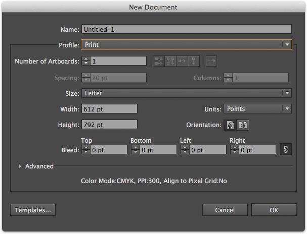

Illustrator is a super powerful vector based graphics editor. It is part of the Adobe Creative Cloud, and will be the first application we learn to use. Below is the basic rundown of what we will cover first.
File > New and make a new Letter Document (8.5x11 inches). We will just use the default settings for now.

File > Open